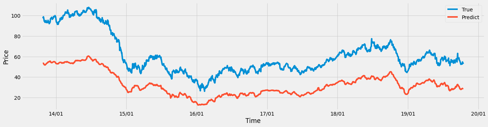
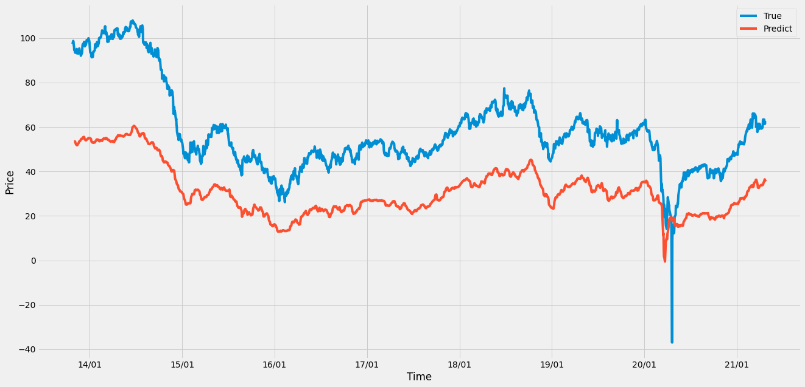

WTI 常稱為美國原油、西德州原油或紐約原油，WTI是West Texas Intermediate 的簡稱，代表西德州中級原油 (West Texas Intermediate)，偶爾稱為德州輕甜原油 (Texas Light Sweet)，它是大宗商品交易中核心的石油基準。
import numpy as np
import pandas as pd
import matplotlib.pyplot as plt
import torch
import torch.optim as optim
import torch.nn as nn
import warnings
warnings.filterwarnings("ignore")
%matplotlib inline
from torch.utils.data import TensorDataset
from torch.utils.data import DataLoader
import matplotlib.dates as mdates
from sklearn.preprocessing import MinMaxScaler
device = 'cuda' if torch.cuda.is_available() else 'cpu'
print('Using {} device'.format(device))
Using cuda device
!gdown --id '11r8ZxjlDFy3I0VlT5JVYPxWq7sRYMnSl' --output orgdata.csv
!ls
# 使用顯卡型號
# K80 < P4 < T4 < P100 <= T4(fp16) < V100
!nvidia-smi
Downloading...
From: https://drive.google.com/uc?id=11r8ZxjlDFy3I0VlT5JVYPxWq7sRYMnSl
To: /content/orgdata.csv
0% 0.00/132k [00:00<?, ?B/s]
100% 132k/132k [00:00<00:00, 49.7MB/s]
orgdata.csv sample_data
Mon Nov 8 02:34:12 2021
+-----------------------------------------------------------------------------+
| NVIDIA-SMI 495.44 Driver Version: 460.32.03 CUDA Version: 11.2 |
|-------------------------------+----------------------+----------------------+
| GPU Name Persistence-M| Bus-Id Disp.A | Volatile Uncorr. ECC |
| Fan Temp Perf Pwr:Usage/Cap| Memory-Usage | GPU-Util Compute M. |
| | | MIG M. |
|===============================+======================+======================|
| 0 Tesla P100-PCIE... Off | 00000000:00:04.0 Off | 0 |
| N/A 35C P0 26W / 250W | 2MiB / 16280MiB | 0% Default |
| | | N/A |
+-------------------------------+----------------------+----------------------+
+-----------------------------------------------------------------------------+
| Processes: |
| GPU GI CI PID Type Process name GPU Memory |
| ID ID Usage |
|=============================================================================|
| No running processes found |
+-----------------------------------------------------------------------------+
前處理#
import random
import numpy as np
def same_seeds(seed):
# Python built-in random module
random.seed(seed)
# Numpy
np.random.seed(seed)
# Torch
torch.manual_seed(seed)
if torch.cuda.is_available():
torch.cuda.manual_seed(seed)
torch.cuda.manual_seed_all(seed)
torch.backends.cudnn.benchmark = False
torch.backends.cudnn.deterministic = True
same_seeds(36544)
path = 'orgdata.csv'
features = pd.read_csv(path)
features
| Unnamed: 0 | 日期 | 標普500 | 西德州 | 布蘭特原油 | 原油庫存 | MSCI能源ETF價格 | 世界能源指數 | VIX恐慌指数 | |
|---|---|---|---|---|---|---|---|---|---|
| 0 | 7257 | 2013/10/25 | 1759.77 | 97.40 | 105.70 | 97.849998 | 25.000000 | 269.49 | 13.09 |
| 1 | 7258 | 2013/10/28 | 1762.11 | 98.74 | 108.29 | 98.680000 | 25.040001 | 269.36 | 13.31 |
| 2 | 7259 | 2013/10/29 | 1771.95 | 98.29 | 108.04 | 98.199997 | 25.219999 | 271.72 | 13.41 |
| 3 | 7260 | 2013/10/30 | 1763.31 | 96.81 | 108.41 | 96.769997 | 25.059999 | 271.09 | 13.65 |
| 4 | 7261 | 2013/10/31 | 1756.54 | 96.29 | 107.53 | 96.379997 | 25.000000 | 269.36 | 13.75 |
| ... | ... | ... | ... | ... | ... | ... | ... | ... | ... |
| 1863 | 9209 | 2021/4/20 | 4134.94 | 62.61 | 65.34 | 62.439999 | 12.680000 | 151.47 | 18.68 |
| 1864 | 9210 | 2021/4/21 | 4173.42 | 61.34 | 64.02 | 61.349998 | 12.870000 | 153.06 | 17.50 |
| 1865 | 9211 | 2021/4/22 | 4134.98 | 61.45 | 65.07 | 61.430000 | 12.700000 | 151.42 | 18.71 |
| 1866 | 9212 | 2021/4/23 | 4180.17 | 62.18 | 65.75 | 62.139999 | 12.840000 | 152.06 | 17.33 |
| 1867 | 9213 | 2021/4/26 | 4187.62 | 62.02 | 65.50 | 61.910000 | 12.930000 | 153.32 | 17.64 |
1868 rows × 9 columns
檢查是否有nan 並解決#
print(np.any(np.isnan(features['原油庫存'])))
print(np.any(np.isnan(features['MSCI能源ETF價格'])))
print(np.any(np.isnan(features['世界能源指數'])))
print(np.any(np.isnan(features['VIX恐慌指数'])))
True
False
False
False
index = 0
for i in range(len(features['原油庫存'])):
if np.any(np.isnan(features['原油庫存'].iloc[i])) == True:
features['原油庫存'].iloc[i] = features['原油庫存'].iloc[i-1]
index += 1
print(np.any(np.isnan(features['原油庫存'])))
print(np.any(np.isnan(features['MSCI能源ETF價格'])))
print(np.any(np.isnan(features['世界能源指數'])))
print(np.any(np.isnan(features['VIX恐慌指数'])))
False
False
False
False
# features.drop(axis=0, columns=[features.columns[0],features.columns[2],features.columns[4],features.columns[6],features.columns[7],features.columns[8]], inplace=True)
features.drop(axis=0, columns=[features.columns[0]], inplace=True)
features
| 日期 | 標普500 | 西德州 | 布蘭特原油 | 原油庫存 | MSCI能源ETF價格 | 世界能源指數 | VIX恐慌指数 | |
|---|---|---|---|---|---|---|---|---|
| 0 | 2013/10/25 | 1759.77 | 97.40 | 105.70 | 97.849998 | 25.000000 | 269.49 | 13.09 |
| 1 | 2013/10/28 | 1762.11 | 98.74 | 108.29 | 98.680000 | 25.040001 | 269.36 | 13.31 |
| 2 | 2013/10/29 | 1771.95 | 98.29 | 108.04 | 98.199997 | 25.219999 | 271.72 | 13.41 |
| 3 | 2013/10/30 | 1763.31 | 96.81 | 108.41 | 96.769997 | 25.059999 | 271.09 | 13.65 |
| 4 | 2013/10/31 | 1756.54 | 96.29 | 107.53 | 96.379997 | 25.000000 | 269.36 | 13.75 |
| ... | ... | ... | ... | ... | ... | ... | ... | ... |
| 1863 | 2021/4/20 | 4134.94 | 62.61 | 65.34 | 62.439999 | 12.680000 | 151.47 | 18.68 |
| 1864 | 2021/4/21 | 4173.42 | 61.34 | 64.02 | 61.349998 | 12.870000 | 153.06 | 17.50 |
| 1865 | 2021/4/22 | 4134.98 | 61.45 | 65.07 | 61.430000 | 12.700000 | 151.42 | 18.71 |
| 1866 | 2021/4/23 | 4180.17 | 62.18 | 65.75 | 62.139999 | 12.840000 | 152.06 | 17.33 |
| 1867 | 2021/4/26 | 4187.62 | 62.02 | 65.50 | 61.910000 | 12.930000 | 153.32 | 17.64 |
1868 rows × 8 columns
時間轉換為datetime格式#
date = list(features['日期'])
date_form = []
for i in date:
i = i.replace('/','-')
date_form.append(i)
date_form[:10]
['2013-10-25',
'2013-10-28',
'2013-10-29',
'2013-10-30',
'2013-10-31',
'2013-11-1',
'2013-11-4',
'2013-11-5',
'2013-11-6',
'2013-11-7']
# date = datetime格式
import datetime
dates = [datetime.datetime.strptime(x, '%Y-%m-%d') for x in date_form]
dates[:5]
[datetime.datetime(2013, 10, 25, 0, 0),
datetime.datetime(2013, 10, 28, 0, 0),
datetime.datetime(2013, 10, 29, 0, 0),
datetime.datetime(2013, 10, 30, 0, 0),
datetime.datetime(2013, 10, 31, 0, 0)]
features.set_index("日期")
| 標普500 | 西德州 | 布蘭特原油 | 原油庫存 | MSCI能源ETF價格 | 世界能源指數 | VIX恐慌指数 | |
|---|---|---|---|---|---|---|---|
| 日期 | |||||||
| 2013/10/25 | 1759.77 | 97.40 | 105.70 | 97.849998 | 25.000000 | 269.49 | 13.09 |
| 2013/10/28 | 1762.11 | 98.74 | 108.29 | 98.680000 | 25.040001 | 269.36 | 13.31 |
| 2013/10/29 | 1771.95 | 98.29 | 108.04 | 98.199997 | 25.219999 | 271.72 | 13.41 |
| 2013/10/30 | 1763.31 | 96.81 | 108.41 | 96.769997 | 25.059999 | 271.09 | 13.65 |
| 2013/10/31 | 1756.54 | 96.29 | 107.53 | 96.379997 | 25.000000 | 269.36 | 13.75 |
| ... | ... | ... | ... | ... | ... | ... | ... |
| 2021/4/20 | 4134.94 | 62.61 | 65.34 | 62.439999 | 12.680000 | 151.47 | 18.68 |
| 2021/4/21 | 4173.42 | 61.34 | 64.02 | 61.349998 | 12.870000 | 153.06 | 17.50 |
| 2021/4/22 | 4134.98 | 61.45 | 65.07 | 61.430000 | 12.700000 | 151.42 | 18.71 |
| 2021/4/23 | 4180.17 | 62.18 | 65.75 | 62.139999 | 12.840000 | 152.06 | 17.33 |
| 2021/4/26 | 4187.62 | 62.02 | 65.50 | 61.910000 | 12.930000 | 153.32 | 17.64 |
1868 rows × 7 columns
# 指定風格
plt.style.use('fivethirtyeight')
# 布局
fig, ((ax1, ax2, ax3), (ax4, ax5, ax6), (ax7, ax8, ax9)) = plt.subplots(nrows=3, ncols=3, figsize = (20,20))
fig.autofmt_xdate(rotation = 0.5)
ax1.plot(dates, features['西德州'])
ax1.set_xlabel(''); ax1.set_ylabel('Price'); ax1.set_title('West Texas Intermediate ')
ax2.plot(dates, features['西德州'])
ax2.set_xlabel(''); ax2.set_ylabel('Price'); ax2.set_title('West Texas Intermediate ')
ax3.plot(dates, features['西德州'])
ax3.set_xlabel(''); ax3.set_ylabel('Price'); ax3.set_title('West Texas Intermediate ')
ax4.plot(dates, features['布蘭特原油'])
ax4.set_xlabel(''); ax4.set_ylabel('Price'); ax4.set_title('BRENT Index') # 布蘭特原油指數
ax5.plot(dates, features['原油庫存'])
ax5.set_xlabel('Date'); ax5.set_ylabel('Price'); ax5.set_title('Crude oil inventories') # 美國原油庫存
ax6.plot(dates, features['MSCI能源ETF價格'])
ax6.set_xlabel('Date'); ax6.set_ylabel('Price'); ax6.set_title('MSCI Energy ETF') # MSCI能源ETF價格
ax7.plot(dates, features['世界能源指數'])
ax7.set_xlabel('Date'); ax7.set_ylabel('index'); ax7.set_title('MSCI Energy Index') # 世界能源指數
ax8.plot(dates, features['標普500'])
ax8.set_xlabel('Date'); ax8.set_ylabel('Price'); ax8.set_title('S&P500') # S&P500
ax9.plot(dates, features['VIX恐慌指数'])
ax9.set_xlabel('Date'); ax9.set_ylabel('index'); ax9.set_title('VIX Index') # VIX恐慌指数
# plt.tight_layout(pad=2)
Text(0.5, 1.0, 'VIX Index')

features_process = features.iloc[:,1:]
features_process
| 標普500 | 西德州 | 布蘭特原油 | 原油庫存 | MSCI能源ETF價格 | 世界能源指數 | VIX恐慌指数 | |
|---|---|---|---|---|---|---|---|
| 0 | 1759.77 | 97.40 | 105.70 | 97.849998 | 25.000000 | 269.49 | 13.09 |
| 1 | 1762.11 | 98.74 | 108.29 | 98.680000 | 25.040001 | 269.36 | 13.31 |
| 2 | 1771.95 | 98.29 | 108.04 | 98.199997 | 25.219999 | 271.72 | 13.41 |
| 3 | 1763.31 | 96.81 | 108.41 | 96.769997 | 25.059999 | 271.09 | 13.65 |
| 4 | 1756.54 | 96.29 | 107.53 | 96.379997 | 25.000000 | 269.36 | 13.75 |
| ... | ... | ... | ... | ... | ... | ... | ... |
| 1863 | 4134.94 | 62.61 | 65.34 | 62.439999 | 12.680000 | 151.47 | 18.68 |
| 1864 | 4173.42 | 61.34 | 64.02 | 61.349998 | 12.870000 | 153.06 | 17.50 |
| 1865 | 4134.98 | 61.45 | 65.07 | 61.430000 | 12.700000 | 151.42 | 18.71 |
| 1866 | 4180.17 | 62.18 | 65.75 | 62.139999 | 12.840000 | 152.06 | 17.33 |
| 1867 | 4187.62 | 62.02 | 65.50 | 61.910000 | 12.930000 | 153.32 | 17.64 |
1868 rows × 7 columns
df_features = features_process
df_features1 = df_features[['西德州']]
df_features2 = df_features[['布蘭特原油']]
df_features3 = df_features[['原油庫存']]
df_features4 = df_features[['標普500']]
df_features5 = df_features[['MSCI能源ETF價格']]
df_features6 = df_features[['世界能源指數']]
df_features7 = df_features[['VIX恐慌指数']]
標準化每個features#
from sklearn.preprocessing import MinMaxScaler
df_features1 = df_features1.fillna(method = 'ffill')
df_features2 = df_features2.fillna(method = 'ffill')
df_features3 = df_features3.fillna(method = 'ffill')
df_features4 = df_features4.fillna(method = 'ffill')
df_features5 = df_features5.fillna(method = 'ffill')
df_features6 = df_features6.fillna(method = 'ffill')
df_features7 = df_features7.fillna(method = 'ffill')
scaler = MinMaxScaler(feature_range=(-1, 1))
scaler1 = MinMaxScaler(feature_range=(-1, 1))
df_features['西德州'] = scaler1.fit_transform(df_features['西德州'].values.reshape(-1,1))
scaler_2 = MinMaxScaler(feature_range=(-1, 1))
df_features['布蘭特原油'] = scaler_2.fit_transform(df_features['布蘭特原油'].values.reshape(-1,1))
scaler_3 = MinMaxScaler(feature_range=(-1, 1))
df_features['原油庫存'] = scaler_3.fit_transform(df_features['原油庫存'].values.reshape(-1,1))
scaler_4 = MinMaxScaler(feature_range=(-1, 1))
df_features['標普500'] = scaler_4.fit_transform(df_features['標普500'].values.reshape(-1,1))
scaler_5 = MinMaxScaler(feature_range=(-1, 1))
df_features['MSCI能源ETF價格'] = scaler_5.fit_transform(df_features['MSCI能源ETF價格'].values.reshape(-1,1))
scaler_6 = MinMaxScaler(feature_range=(-1, 1))
df_features['世界能源指數'] = scaler_6.fit_transform(df_features['世界能源指數'].values.reshape(-1,1))
scaler_7 = MinMaxScaler(feature_range=(-1, 1))
df_features['VIX恐慌指数'] = scaler_7.fit_transform(df_features['VIX恐慌指数'].values.reshape(-1,1))
變數選擇#
# 標普500(1) 西德州(2) 布蘭特原油(3) 原油庫存(4) MSCI能源ETF價格(5) 世界能源指數(6) VIX恐慌指数(7)
# df_features.drop(axis=0, columns=[features.columns[1], features.columns[3], features.columns[4], features.columns[5], features.columns[6], features.columns[7]], inplace=True)
# df_features.drop(axis=0, columns=[features.columns[3], features.columns[6]], inplace=True)
divide Training and validation#
Input shape#
3D tensor with shape (batch_size, timesteps, input_dim). 同LSTM的batch_first
timesteps can be None. This can be useful if each sequence is of a different length: Multiple Length Sequence Example
設定Hyperparameter#
from torch import optim
import torch as t
#-------for LSTM formula--------------#
look_back_windows = 5 # 用前幾天的資料預測下一天 同look_back
#-------for networks--------------#
kernel_size = 2
dropout = 0.2
#-------for training--------------#
learning_rate = 0.001
epoch = 1000
def load_data(stock, n_timestamp, true, dates):
data_raw = stock.values # convert to numpy array
data = []
# create all possible sequences of length look_back
for index in range(len(data_raw) - n_timestamp):
data.append(data_raw[index: index + n_timestamp])
data = np.array(data);
test_set_size = int(np.round(0.2*data.shape[0]));
train_set_size = data.shape[0] - (test_set_size);
train_set_size_list = train_set_size + n_timestamp
train_dates = dates[:train_set_size]
test_dates = dates[train_set_size_list:]
train_true = true[:train_set_size]
test_true = true[train_set_size_list:]
x_all = data[:,:-1,:]
x_train = data[:train_set_size,:-1,:]
y_train = data[:train_set_size,-1,:]
x_test = data[train_set_size:,:-1]
y_test = data[train_set_size:,-1,:]
return [x_all, x_train, y_train, x_test, y_test, data, train_true, test_true, train_dates, test_dates]
x_all, x_train, y_train, x_test, y_test, data, train_true, test_true, train_dates, test_dates = load_data(df_features, look_back_windows, df_features1, dates)
print('x_all.shape = ',x_all.shape)
print('x_train.shape = ',x_train.shape)
print('y_train.shape = ',y_train.shape)
print('x_test.shape = ',x_test.shape)
print('y_test.shape = ',y_test.shape)
print('train_true.shape = ',train_true.shape)
print('test_true.shape = ',test_true.shape)
print('train_dates.shape = ',len(train_dates))
print('test_dates.shape = ',len(test_dates))
print('data for wholes = ', data.shape)
x_all.shape = (1863, 4, 7)
x_train.shape = (1490, 4, 7)
y_train.shape = (1490, 7)
x_test.shape = (373, 4, 7)
y_test.shape = (373, 7)
train_true.shape = (1490, 1)
test_true.shape = (373, 1)
train_dates.shape = 1490
test_dates.shape = 373
data for wholes = (1863, 5, 7)
x_all, x_train, x_valid, y_train, y_valid = np.array(x_all), np.array(x_train),np.array(x_test),np.array(y_train),np.array(y_test)
x_all, x_train, x_valid, y_train, y_valid = torch.tensor(x_all, dtype = torch.float), torch.tensor(x_train, dtype = torch.float), torch.tensor(x_valid, dtype = torch.float), torch.tensor(y_train, dtype = torch.float), torch.tensor(y_valid, dtype = torch.float)
print(x_train.shape,type(x_train))
print(y_train.shape,type(y_train))
print(x_valid.shape,type(x_valid))
print(y_valid.shape,type(y_valid))
print(x_all.shape,type(x_all))
torch.Size([1490, 4, 7]) <class 'torch.Tensor'>
torch.Size([1490, 7]) <class 'torch.Tensor'>
torch.Size([373, 4, 7]) <class 'torch.Tensor'>
torch.Size([373, 7]) <class 'torch.Tensor'>
torch.Size([1863, 4, 7]) <class 'torch.Tensor'>
x_train = x_train.to(device)
y_train = y_train.to(device)
x_valid = x_valid.to(device)
y_valid = y_valid.to(device)
導入TCN模型架構#
import torch
import torch.nn as nn
from torch.nn.utils import weight_norm
class Chomp1d(nn.Module):
def __init__(self, chomp_size):
super(Chomp1d, self).__init__()
self.chomp_size = chomp_size
def forward(self, x):
"""
其實這就是一個裁剪的模塊，裁剪多出來的padding
"""
return x[:, :, :-self.chomp_size].contiguous()
class TemporalBlock(nn.Module):
def __init__(self, n_inputs, n_outputs, kernel_size, stride, dilation, padding, dropout=0.2):
"""
相當於一個Residual block
:param n_inputs: int, 輸入通道數
:param n_outputs: int, 輸出通道數
:param kernel_size: int, 卷積核尺寸
:param stride: int, 步長，一般爲1
:param dilation: int, 膨脹係數
:param padding: int, 填充係數
:param dropout: float, dropout比率
"""
super(TemporalBlock, self).__init__()
self.conv1 = weight_norm(nn.Conv1d(n_inputs, n_outputs, kernel_size,
stride=stride, padding=padding, dilation=dilation))
# 經過conv1，輸出的size其實是(Batch, input_channel, seq_len + padding)
self.chomp1 = Chomp1d(padding) # 裁剪掉多出來的padding部分，維持輸出時間步爲seq_len
self.relu1 = nn.ReLU()
self.dropout1 = nn.Dropout(dropout)
self.conv2 = weight_norm(nn.Conv1d(n_outputs, n_outputs, kernel_size,
stride=stride, padding=padding, dilation=dilation))
self.chomp2 = Chomp1d(padding) # 裁剪掉多出來的padding部分，維持輸出時間步爲seq_len
self.relu2 = nn.ReLU()
self.dropout2 = nn.Dropout(dropout)
self.net = nn.Sequential(self.conv1, self.chomp1, self.relu1, self.dropout1,
self.conv2, self.chomp2, self.relu2, self.dropout2)
self.downsample = nn.Conv1d(n_inputs, n_outputs, 1) if n_inputs != n_outputs else None
self.relu = nn.ReLU()
self.init_weights()
def init_weights(self):
"""
參數初始化
:return:
"""
self.conv1.weight.data.normal_(0, 0.01)
self.conv2.weight.data.normal_(0, 0.01)
if self.downsample is not None:
self.downsample.weight.data.normal_(0, 0.01)
def forward(self, x):
"""
:param x: size of (Batch, input_channel, seq_len)
:return:
"""
out = self.net(x)
res = x if self.downsample is None else self.downsample(x)
return self.relu(out + res)
class TemporalConvNet(nn.Module):
# ref: https://www.twblogs.net/a/5d6dc709bd9eee541c33c0b2
def __init__(self, num_inputs, num_channels, kernel_size=2, dropout=0.2):
"""
TCN，目前paper給出的TCN結構很好的支持每個時刻爲一個數的情況，即sequence結構，
對於每個時刻爲一個向量這種一維結構，勉強可以把向量拆成若干該時刻的輸入通道，
對於每個時刻爲一個矩陣或更高維圖像的情況，就不太好辦。
:param num_inputs: int， 輸入通道數
:param num_channels: list，每層的hidden_channel數，例如[25,25,25,25]表示有4個隱層，每層hidden_channel數爲25
:param kernel_size: int, 卷積核尺寸
:param dropout: float, drop_out比率
"""
super(TemporalConvNet, self).__init__()
layers = []
num_levels = len(num_channels)
for i in range(num_levels):
dilation_size = 2 ** i # 膨脹係數：1，2，4，8……
in_channels = num_inputs if i == 0 else num_channels[i-1] # 確定每一層的輸入通道數
out_channels = num_channels[i] # 確定每一層的輸出通道數
layers += [TemporalBlock(in_channels, out_channels, kernel_size, stride=1, dilation=dilation_size,
padding=(kernel_size-1) * dilation_size, dropout=dropout)]
self.network = nn.Sequential(*layers)
def forward(self, x):
"""
輸入x的結構不同於RNN，一般RNN的size爲(Batch, seq_len, channels)或者(seq_len, Batch, channels)，
這裏把seq_len放在channels後面，把所有時間步的數據拼起來，當做Conv1d的輸入尺寸，實現卷積跨時間步的操作，
很巧妙的設計。
:param x: size of (Batch, input_channel, seq_len)
:return: size of (Batch, output_channel, seq_len)
"""
return self.network(x)
建立模型#
class TCNModel(nn.Module):
def __init__(self, num_inputs, num_channels, kernel_size=kernel_size, dropout=dropout):
super(TCNModel, self).__init__()
self.tcn = TemporalConvNet(
num_inputs, num_channels, kernel_size=kernel_size, dropout=dropout) #(num_inputs神經元, num_channels通道, kernel_size, dropout)
self.dropout = nn.Dropout(dropout)
self.decoder = nn.Linear(num_channels[-1], 1)
def forward(self, x):
return self.decoder(self.dropout(self.tcn(x)[:, :, -1]))
定義RMSE#
class RMSELoss(nn.Module):
def __init__(self):
super().__init__()
self.mse = nn.MSELoss()
def forward(self,yhat,y):
return torch.sqrt(self.mse(yhat,y))
訓練model的參數定義#
num_channels = [x_train.shape[2], x_train.shape[2], x_train.shape[2]] # num_channels: 必須以list包裝，num_channels每層的hidden_channel數，例如[25,25,25,25]表示有4個隱層，每層hidden_channel數爲25
num_inputs = look_back_windows-1
model = TCNModel(num_inputs, num_channels, kernel_size=kernel_size, dropout=dropout).to(device) # num_inputs = look_back_windows-1, num_channels = 通道數
#-------for optimizer and evaluation--------------#
opt = optim.Adam(model.parameters(), lr=learning_rate)
loss_func = RMSELoss()
def train(x_train, y_train, hist):
model.train()
# look_back = look_back_windows-1
pred = model(x_train)
loss = loss_func(pred, y_train.to(device))
# if t % 10 == 0 and t !=0:
# # print("Epoch ", t, "MSE: ", loss.item())
hist[t] = loss.item()
# Zero out gradient, else they will accumulate between epochs
opt.zero_grad()
# Backward pass
loss.backward()
# Update parameters
opt.step()
return pred, loss, hist[t]
def test(x_test, y_test, hist_val):
model.eval() # 關閉batchnormaliztion和dropout
look_back = look_back_windows-1
predict_val = model(x_test)
loss_val = loss_func(predict_val , y_test)
hist_val[t] = loss.item()
return predict_val, loss_val, hist_val[t]
# Train model
##################### Loss 0.3533
hist = np.zeros(epoch)
hist_val = np.zeros(epoch)
# Number of steps to unroll
t = 0
for t in range(epoch):
pred, loss, hist[t] = train(x_train, y_train, hist)
predict_val, loss_val, hist_val[t] = test(x_valid, y_valid, hist_val)
t += 1
if (t) % 10 == 0:
print(f'epoch:{t} ------- loss:{loss.item():.4f} ------- valid_loss:{loss_val.item():.4f}')
model.train(False) # 關閉訓練模式
epoch:10 ------- loss:0.5388 ------- valid_loss:0.4552
epoch:20 ------- loss:0.5300 ------- valid_loss:0.4543
---------------------------------------------------------------------------
KeyboardInterrupt Traceback (most recent call last)
<ipython-input-39-ecee339fc135> in <module>()
10 t = 0
11 for t in range(epoch):
---> 12 pred, loss, hist[t] = train(x_train, y_train, hist)
13 predict_val, loss_val, hist_val[t] = test(x_valid, y_valid, hist_val)
14 t += 1
<ipython-input-38-96baefccea11> in train(x_train, y_train, hist)
2 model.train()
3 # look_back = look_back_windows-1
----> 4 pred = model(x_train)
5 loss = loss_func(pred, y_train.to(device))
6
/usr/local/lib/python3.7/dist-packages/torch/nn/modules/module.py in _call_impl(self, *input, **kwargs)
1049 if not (self._backward_hooks or self._forward_hooks or self._forward_pre_hooks or _global_backward_hooks
1050 or _global_forward_hooks or _global_forward_pre_hooks):
-> 1051 return forward_call(*input, **kwargs)
1052 # Do not call functions when jit is used
1053 full_backward_hooks, non_full_backward_hooks = [], []
<ipython-input-33-2aaee199e373> in forward(self, x)
8
9 def forward(self, x):
---> 10 return self.decoder(self.dropout(self.tcn(x)[:, :, -1]))
/usr/local/lib/python3.7/dist-packages/torch/nn/modules/module.py in _call_impl(self, *input, **kwargs)
1049 if not (self._backward_hooks or self._forward_hooks or self._forward_pre_hooks or _global_backward_hooks
1050 or _global_forward_hooks or _global_forward_pre_hooks):
-> 1051 return forward_call(*input, **kwargs)
1052 # Do not call functions when jit is used
1053 full_backward_hooks, non_full_backward_hooks = [], []
<ipython-input-31-7c2b4ba8b004> in forward(self, x)
103 :return: size of (Batch, output_channel, seq_len)
104 """
--> 105 return self.network(x)
/usr/local/lib/python3.7/dist-packages/torch/nn/modules/module.py in _call_impl(self, *input, **kwargs)
1049 if not (self._backward_hooks or self._forward_hooks or self._forward_pre_hooks or _global_backward_hooks
1050 or _global_forward_hooks or _global_forward_pre_hooks):
-> 1051 return forward_call(*input, **kwargs)
1052 # Do not call functions when jit is used
1053 full_backward_hooks, non_full_backward_hooks = [], []
/usr/local/lib/python3.7/dist-packages/torch/nn/modules/container.py in forward(self, input)
137 def forward(self, input):
138 for module in self:
--> 139 input = module(input)
140 return input
141
/usr/local/lib/python3.7/dist-packages/torch/nn/modules/module.py in _call_impl(self, *input, **kwargs)
1049 if not (self._backward_hooks or self._forward_hooks or self._forward_pre_hooks or _global_backward_hooks
1050 or _global_forward_hooks or _global_forward_pre_hooks):
-> 1051 return forward_call(*input, **kwargs)
1052 # Do not call functions when jit is used
1053 full_backward_hooks, non_full_backward_hooks = [], []
<ipython-input-31-7c2b4ba8b004> in forward(self, x)
65 :return:
66 """
---> 67 out = self.net(x)
68 res = x if self.downsample is None else self.downsample(x)
69 return self.relu(out + res)
/usr/local/lib/python3.7/dist-packages/torch/nn/modules/module.py in _call_impl(self, *input, **kwargs)
1049 if not (self._backward_hooks or self._forward_hooks or self._forward_pre_hooks or _global_backward_hooks
1050 or _global_forward_hooks or _global_forward_pre_hooks):
-> 1051 return forward_call(*input, **kwargs)
1052 # Do not call functions when jit is used
1053 full_backward_hooks, non_full_backward_hooks = [], []
/usr/local/lib/python3.7/dist-packages/torch/nn/modules/container.py in forward(self, input)
137 def forward(self, input):
138 for module in self:
--> 139 input = module(input)
140 return input
141
/usr/local/lib/python3.7/dist-packages/torch/nn/modules/module.py in _call_impl(self, *input, **kwargs)
1069 input = bw_hook.setup_input_hook(input)
1070
-> 1071 result = forward_call(*input, **kwargs)
1072 if _global_forward_hooks or self._forward_hooks:
1073 for hook in itertools.chain(
/usr/local/lib/python3.7/dist-packages/torch/nn/modules/conv.py in forward(self, input)
296
297 def forward(self, input: Tensor) -> Tensor:
--> 298 return self._conv_forward(input, self.weight, self.bias)
299
300
/usr/local/lib/python3.7/dist-packages/torch/nn/modules/conv.py in _conv_forward(self, input, weight, bias)
293 _single(0), self.dilation, self.groups)
294 return F.conv1d(input, weight, bias, self.stride,
--> 295 self.padding, self.dilation, self.groups)
296
297 def forward(self, input: Tensor) -> Tensor:
KeyboardInterrupt:
plt.subplots(figsize=(20,5))
plt.subplot(1,2,1)
plt.ylabel("RMSE")
plt.xlabel("Epochs")
plt.plot(hist, label="Training loss")
plt.legend()
plt.subplot(1,2,2)
plt.ylabel("RMSE")
plt.xlabel("Epochs")
plt.plot(hist_val, label="validation loss")
plt.legend()
<matplotlib.legend.Legend at 0x7fc51a08dad0>

# Training data 訓練結果
pred = model(x_train)
plt.subplots(figsize=(20,5))
plt.ylabel("Price")
plt.xlabel("Time")
pred = scaler1.inverse_transform(pred.detach().cpu().numpy()) #去除Tensor中的Cuda
pred_list = [] #pred to list
for i in pred:
pred_list.append(i[0])
plt.gca().xaxis.set_major_formatter(mdates.DateFormatter('%y/%m')) #設定橫軸格式
plt.plot(train_dates,train_true, label="True")
plt.plot(train_dates,pred_list, label="Predict")
plt.legend()
<matplotlib.legend.Legend at 0x7f44d9e47a50>

# Testing data訓練結果
plt.subplots(figsize=(20,10))
pred = model(x_valid)
pred = scaler1.inverse_transform(pred.detach().cpu().numpy())
pred_list = [] #pred to list
for i in pred:
pred_list.append(i[0])
plt.gca().xaxis.set_major_formatter(mdates.DateFormatter('%y/%m'))
plt.plot(test_dates, test_true, label="True")
plt.plot(test_dates, pred_list, label="Predict")
plt.legend()
<matplotlib.legend.Legend at 0x7f45470572d0>

# 全期訓練結果
plt.subplots(figsize=(20,10))
data = torch.tensor(data, dtype = torch.float)
pred = model(x_all.to(device))
plt.ylabel("Price")
plt.xlabel("Time")
pred = scaler1.inverse_transform(pred.detach().cpu().numpy())
pred_list = [] #pred to list
for i in pred:
pred_list.append(i[0])
plt.gca().xaxis.set_major_formatter(mdates.DateFormatter('%y/%m'))
plt.plot(dates, df_features1, label="True")
plt.plot(dates[look_back_windows:], pred_list, label="Predict")
plt.legend()
<matplotlib.legend.Legend at 0x7f44d70df4d0>
